Чи не перше покоління читачів усього світу з нетерпінням чекає виходу кожної нової книги британського метра.
У минулому співробітник MI-6, Джон Ле Карре знає про роботу спецслужб куди більше, ніж потрібно для душевного комфорту, - його герої живуть під тиском вічного вибору між обов'язком і честю.
Шедеври шпигунського роману, що виходять з-під пера Ле Карре, сумні й іронічні, зворушливі і нещадні, по праву займають почесне полку в будь-який домашній бібліотеці.
У новому романі "Такий же зрадник, як ми" молода англійська пара влаштовує собі романтичні канікули на Антигуа, де знаходить спільну мову з російським багатієм, які відмивають гроші для злочинних угруповань, чиї лідери ось-ось спишуть його з рахунків.
Щоб врятувати себе і сім'ю, він пропонує розвідці Великобританії море цінних відомостей в обмін на захист і заступництво. Його остання відчайдушна надія - на "англійських джентльменів", які завжди "грають чесно" ...
Ви можете безкоштовно почитати книгу Джен Ле Карре "Такой же предатель, как мы". Щоб читати онлайн книгу "Такой же предатель, как мы" перейдіть за вказаним посиланням.
Приємного Вам читання.
>>>Повернутися на головне меню
Дитиною вона втікала з дому в пошуках тих, хто її полюбить, — міліція повертала до рідної неньки. Ви можете безкоштовно почитати книгу Ольга Слоньовська "Дівчина на кулі". Щоб читати онлайн книгу "Дівчина на кулі" перейдіть за вказаним посиланням. >>>Повернутися на головне меню
Світ Майки Маккензі звалився, коли його сестру згвалтував хлопець з багатої родини. Світ Еллі Паркер здригнувся, коли її брата звинуватили в страшному злочині. Ви можете безкоштовно почитати книгу Дженни Даунхем "Ты против меня". Щоб читати онлайн книгу "Ты против меня" перейдіть за вказаним посиланням. >>>Повернутися на головне меню
Фионе Брістоу вдалося вижити в низці жахливих злочинів, скоєних серійним вбивцею Джорджем Перрі. Пройшовши через немислимі випробування, вона стала ще сильнішою, мужньої і безстрашної. Ви можете безкоштовно почитати книгу Нора Робертс "Опасный след". Щоб читати онлайн книгу "Опасный след" перейдіть за вказаним посиланням. >>>Повернутися на головне меню
«Пекельна тиждень» - це спецкурс, який в норвезькій армії використовується при підготовці бійців спецназу. Ви можете безкоштовно почитати книгу Эрик Ларссен "На пределе. Неделя без жалости к себе". Щоб читати онлайн книгу "На пределе. Неделя без жалости к себе" перейдіть за вказаним посиланням. >>>Повернутися на головне меню
З притулку для важких підлітків пропадає сімнадцятирічна дівчина. Через три місяці її знаходять мертвою на ліжку з пташиного пір'я, в пентаграмме зі свічок. У слідчих Холгера Мунка і Мії Крюгер немає сумнівів: це вбивство, причому дуже схоже на якийсь ритуал. Ви можете безкоштовно почитати книгу Самюэль Бьорк "Сова". Щоб читати онлайн книгу "Сова" перейдіть за вказаним посиланням. >>>Повернутися на головне меню
У штаті Вайомінг дитині достатньо простежити за рухами тіла людини, щоб розгадати його найпохмуріші таємниці. Житель Нью-Йорка, буквально плаваючи як риба в світових інформаційних потоках, викачує мільярди з фондової біржі. У Чикаго дівчина здатна на очах у поліції перетворюватися в невидимку. Ви можете безкоштовно почитати книгу Маркус Сэйки "Одаренные. Земля Обетованная". Щоб читати онлайн книгу "Одаренные. Земля Обетованная" перейдіть за вказаним посиланням. >>>Повернутися на головне меню
Коли з'явилися обдаровані - світ почав змінюватися. У 1980-х роки менше відсотка від усіх народжених дітей мали талантами, які раніше здавалися неймовірними. З кожним роком ставало все більше людей, які вміють з легкістю розкривати чужі таємниці, передбачати біржові ставки, пересуватися практично невидимими. Ви можете безкоштовно почитати книгу Маркус Сэйки "Одаренные. Лучший мир". Щоб читати онлайн книгу "Одаренные. Лучший мир" перейдіть за вказаним посиланням. >>>Повернутися на головне меню
Невеликий прибережне містечко Бродчёрч потрясла трагедія - одинадцятирічного Денні Латімер знайшли задушеним на пляжі. Детективи Алек Харді і Еллі Міллер мають намір вирахувати вбивцю у що б то не стало. Ви можете безкоштовно почитати книгу Крис Чибнелл, Эрин Келли "Убийство на пляже". Щоб читати онлайн книгу "Убийство на пляже" перейдіть за вказаним посиланням. >>>Повернутися на головне меню
Не так-то просто розповісти в двох словах про цю дивовижну книзі. Зазвичай анотація дає читачеві зрозуміти, про що піде мова, але в даному випадку ми побоюємося, що будь-які попередні висновки або підказки тільки завадять йому. Ви можете безкоштовно почитати книгу Джон Бойн "Мальчик в полосатой пижаме". Щоб читати онлайн книгу "Мальчик в полосатой пижаме" перейдіть за вказаним посиланням. >>>Повернутися на головне меню
Мама Бредлі померла. А він разом зі своєю вірною собакою виявився на вулиці. У хлопчика залишилася тільки звукова листівка з маминим голосом - її останній подарунок. Це найцінніша річ, яка у нього є. Ви можете безкоштовно почитати книгу Майкл Бирн "Последний подарок". Щоб читати онлайн книгу "Последний подарок" перейдіть за вказаним посиланням. >>>Повернутися на головне меню
Герой роману, меланхолійний мрійливий хлопчик, володіє даром спілкуватися з людськими тінями і дізнаватися від них про минуле їх господарів. Ви можете безкоштовно почитати книгу Марк Леви "Похититель теней". Щоб читати онлайн книгу "Похититель теней" перейдіть за вказаним посиланням. >>>Повернутися на головне меню
Звичайним, пригожим осіннім днем, місто Честерс Міллз, штат Мен, був раптово відрізаний від решти світу невидимим силовим бар'єром. Літаки врізаються в купол і падають, палаючи, з небес; дружині фермера відрізає силовим полем руку; люди, які виїхали в сусіднє місто у справах, не можуть повернутися до своїх близьких; автомобілі вибухають від зіткнення з куполом. Ви можете безкоштовно почитати книгу Стивен Кинг "Под куполом". Щоб читати онлайн книгу "Под куполом" перейдіть за вказаним посиланням. >>>Повернутися на головне меню
Ревуть багаття інквізиції і гуркіт копит по залитій кров'ю Європі, яка готується до війни з альбигойской єрессю. Ви можете безкоштовно почитати книгу Игорь Вардунас, Никита Аверин "Хронос. Противостояние". Щоб читати онлайн книгу "Хронос. Противостояние" перейдіть за вказаним посиланням. >>>Повернутися на головне меню
"Я повернуся ..." - правдива історія кохання російської женшіни і східного чоловіка. Всупереч різниці менталітетів і натиску обставин вони долають розпач на шляху один до одного. "Я повернуся ..." - відтворює дух часу роман, в якому Сафарли крізь призму однієї історії показує шлях цілого покоління російських дівчат, які виїхали за щастям на Схід. Ви можете безкоштовно почитати книгу Эльчин Сафарли "Я вернусь...". Щоб читати онлайн книгу "Я вернусь..." перейдіть за вказаним посиланням. >>>Повернутися на головне меню
Не родись красивою, а родись щасливою, - ця проста істина подобається «сіреньким мишок». Але Віра - зовсім інша справа. У дитинстві вона вважалася поганулею, а коли люди розгледіли, яка вона насправді - неймовірна, неземна, вилита Аеліта! - це відкриття принесло їй мало радості. Та й що доброго в жіночої заздрості і жадібних чоловічих поглядах? Ви можете безкоштовно почитати книгу Ирина Волчок "Тихий омут". Щоб читати онлайн книгу "Тихий омут" перейдіть за вказаним посиланням. >>>Повернутися на головне меню
Не поспішайте читати листи мертвого людини, бо вони можуть змінити ваше життя. Любов і зрада, таємниці і помста - все переплелося в гостросюжетному детективі Вадима Єфімова «Шість листів мерця». ... У далекій відрядженні вмирає чоловік Крістіни - багатий бізнесмен. Ви можете безкоштовно почитати книгу Вадим Ефимов "Шесть писем мертвеца". Щоб читати онлайн книгу "Шесть писем мертвеца" перейдіть за вказаним посиланням.
Ольга Слоньовська "Дівчина на кулі"
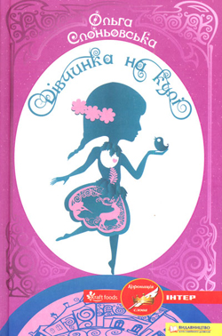
А в тієї материнський інстинкт на Ользі відпочивав, особливо після спроби дівчинки повернути молодшого братика туди, де його начебто і знайшли, — під скирту.
Невже на всій земній кулі не знайдеться людини, що пізнала б у забитому дівчиську маленьку принцесу, адже найголовніше бачать не очі, а серце?.
Приємного Вам читання.
Дженни Даунхем "Ты против меня"
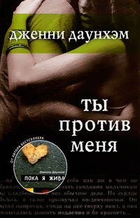
Коли їх світи стикнулися, стався вибух. Сім'я повинна бути на першому місці. Але що робити, якщо на одній чаші ваг виявляється відданість рідним, а на іншій - любов?
Сміливий і рішучий роман про вірність і необхідності вибору. Але перш за все про кохання.
Приємного Вам читання.
Нора Робертс "Опасный след"
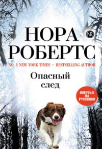
Фіона перемогла страх, навчилася жити по-новому: в маленькому будинку на острові Оркас вона займалася вихованням собак і брала участь в роботі Пошуково-рятувальної кінологічної служби.
Але раптом з'явився він - вбивця з червоним шарфом, який став послідовником і учнем Перрі. Дівчина знову опинилася під прицілом - вона повинна була стати останньою жертвою маніяка.
Приємного Вам читання.
Эрик Ларссен "На пределе. Неделя без жалости к себе"
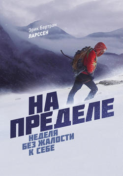
Ерік Бертран Ларссен, який пройшов таку підготовку, пропонує «цивільну версію» - 7-денний продуманий інтенсив, на який здатний будь-яка людина, незалежно від роду його занять. Навіщо? Щоб відчути смак життя, значення простих речей і дізнатися, на що ви насправді здатні, а головне - отримати імпульс для змін на краще.
Приємного Вам читання.
Самюэль Бьорк "Сова"
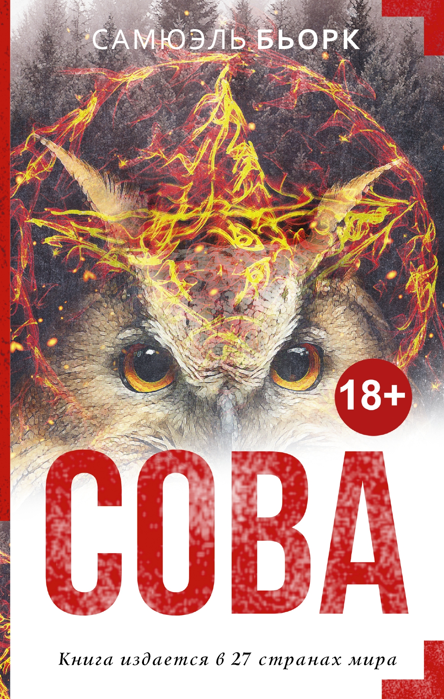
Поки відділ убивств намагається знайти хоч одну зачіпку, в руки Габріеля Мёрка, молодого комп'ютерника з команди Мунка, раптом потрапляє загадкове відео. В кадрі - жертва і хтось ще: силует людини, одягненого в пір'я сови, птиці смерті ... «Сова» - новий захоплюючий психологічний детектив Самюеля Бьорка, номінований на Премію союзу норвезьких книготорговців.
Приємного Вам читання.
Маркус Сэйки "Одаренные. Земля Обетованная"
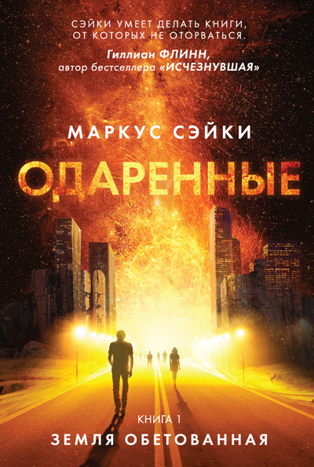
Такі люди народжуються з початку 1980-х. Їх називають надобдаровані. Федеральний агент Нік Купер - один з них. Унікальний талант зробив його щасливим мисливцем на лиходіїв. Але ще ніколи полювання не була так небезпечна. Злочинець теж володіє надздібностями, і руки у нього вже по лікоть в крові, і його мета - катастрофа жахливих масштабів.
Приємного Вам читання.
Маркус Сэйки "Одаренные. Лучший мир"
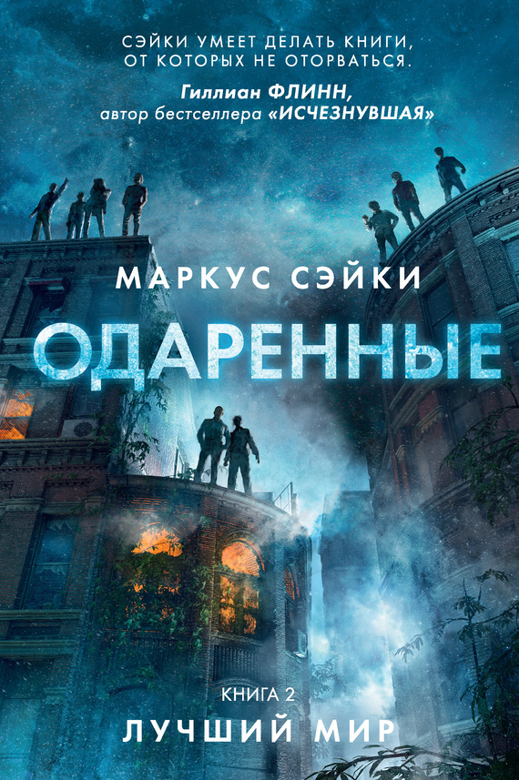
Протягом тридцяти років уряд намагався знищити пролом між нормальними і анормальними, але вона лише розширювалася.
І ось зараз очолювана обдарованими терористична мережа занурила все три міста в хаос. Магазини розграбовані мародерами, служба порятунку 911 ігнорує дзвінки жителів, фанатики спалюють людей заживо. Америка скочується на нищівну громадянську війну.
Нік Купер, колишній мисливець на негідників і нинішній спеціальний радник президента, вступає в гру, яку не можна програти.
Приємного Вам читання.
Крис Чибнелл, Эрин Келли "Убийство на пляже"
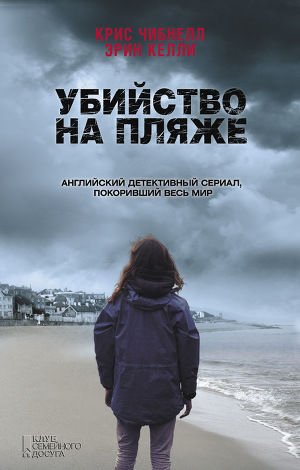
Але розслідування дає вражаючі результати - один за іншим під підозру потрапляють самі добропорядні городяни! У кожного з цих добропорядних людей, виявляється, є свій скелет у шафі. Коли таємниця перестане бути таємницею, містечко здригнеться ...
Приємного Вам читання.
Джон Бойн "Мальчик в полосатой пижаме"
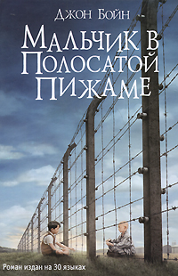
Нам видається дуже важливим, щоб ви почали читати, не відаючи, що вас чекає. Скажемо лише, що вас чекає незвичайне і зачаровує подорож разом з дев'ятирічним хлопчиком на ім'я Бруно. Ось тільки відразу попереджаємо, що книга ця ніяк не призначена для дітей дев'ятирічного віку, навпаки, це дуже доросла книга, звернена до людей, які знають, що таке колючий дріт. Саме колючий дріт виросте на вашому з Бруно шляху. Такого роду огорожі досить поширені в нашому світі. І нам залишається тільки сподіватися, що ви особисто в реальному житті не зіткнетеся ні з чим подібним. Книга ж напевно захопить вас і навряд чи скоро відпустить.
Приємного Вам читання.
Майкл Бирн "Последний подарок"
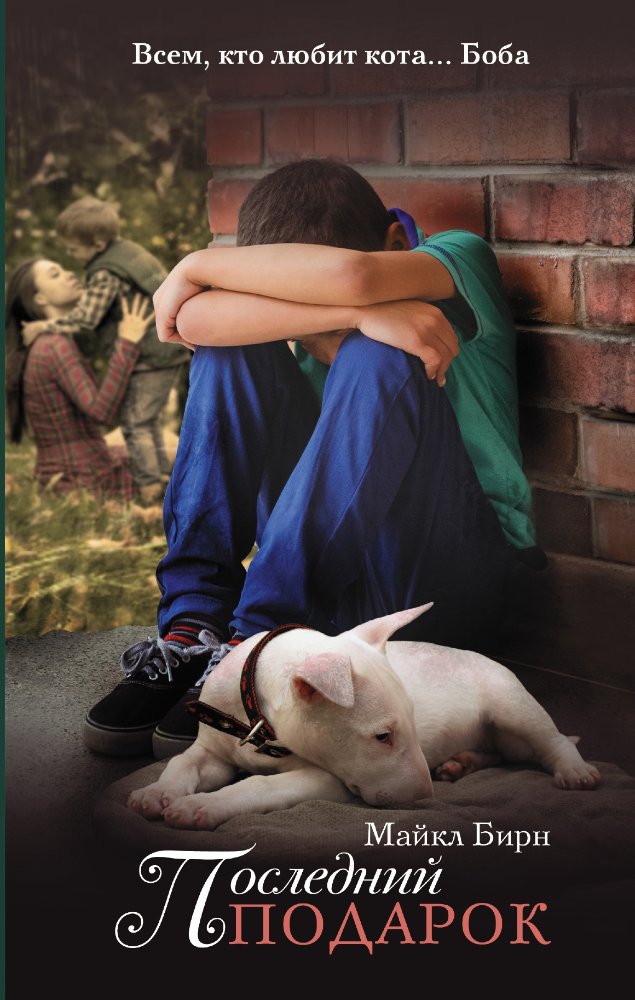
По крайней мере, він так думав, поки не дізнався, що в листівку його мама вклала лотерейний квиток. Бредлі виграв цілий мільйон, і тепер за ним відкрито справжнє полювання.
Бредлі доведеться засвоїти жорстоку науку виживання на лондонському «дні», навчитися вибирати друзів і довіряти лише тим, хто цього заслуговує.
Приємного Вам читання.
Марк Леви "Похититель теней"
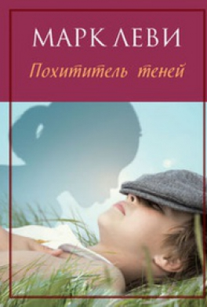
Тіні діляться з хлопчиком таємницями, просять у нього допомоги, і поступово він починає розуміти, що його здібності можна використовувати на благо - потрібно тільки цього захотіти. У дорослому житті він, ставши лікарем, не раз стикається з бідами і горем, однак дар, набутий в дитинстві, як і раніше веде його, не дозволяючи втратити віру в мрію і любов
Приємного Вам читання.
Стивен Кинг "Под куполом"
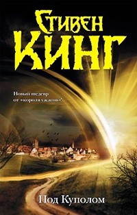
Ніхто не розуміє, що це за бар'єр, звідки він взявся і зникне він.
Дейл Барбара, ветеран конфлікту в Іраку, а нині кухар, виявляє себе в команді з кількома відважними жителями - Джулією Шамвей, власницею міської газети, помічником лікаря, жінкою і трьома хоробрими дітьми.
Проти них виступає Великий Джим Ренні - місцевий політичний діяч, який для утримання влади не зупиниться ні перед чим, навіть перед вбивством, а також його син зі своїм особистим «скелетом у шафі». Але головний їхній супротивник - сам Купол. Оскільки часу не просто мало. Час закінчується!
Приємного Вам читання.
Игорь Вардунас, Никита Аверин "Хронос. Противостояние"
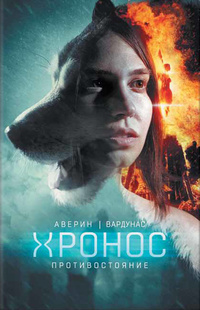
Таємничий жеводанском звіра, що наводить жах на околиці півночі Франції і шериф провінційного американського містечка Ельдорадо, через сторіччя розслідує серію загадкових вбивств в Іллінойському заповіднику Шоуні. Що пов'язує ці події між собою і яка зловісна таємниця ховається під виглядом знаменитого Іллінойського могильника, знову виходить на стежку війни? І чому кожне розкритий злочин в минулому створює зміни в майбутньому? Подібно колам від кинутого у воду каменя, хвилі цих змін прокочуються по всій історії людства.
Протистояння почалося!
Приємного Вам читання.
Эльчин Сафарли "Я вернусь..."
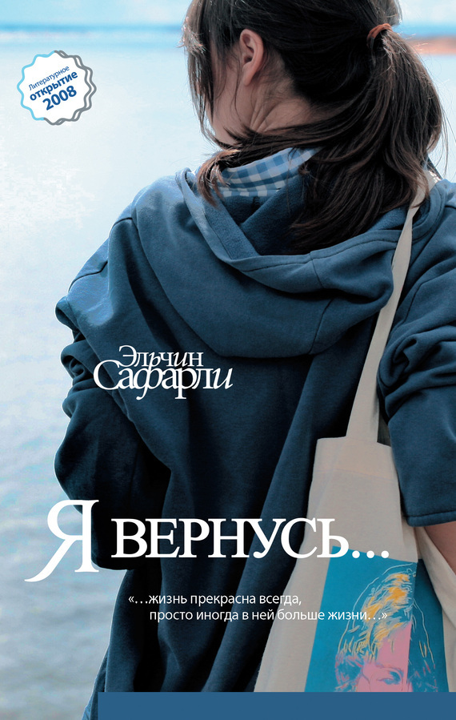
Приємного Вам читання.
Ирина Волчок "Тихий омут"
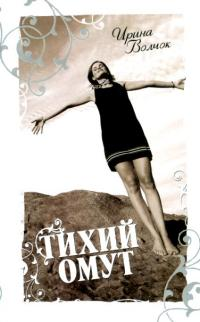
Сувора Віра викладає студентам каламутну науку психологію і вважає, що все знає про людей. Особливо про таких, як неголені пасажири величезного чорного джипа, від яких доводиться рятуватися втечею. Але якби не біг з перешкодами по пересіченій місцевості, вона б так і не зустріла своє щастя. А щастя - воно навіть красуні не завадить! .. астьем на Схід.
Приємного Вам читання.
Вадим Ефимов "Шесть писем мертвеца"
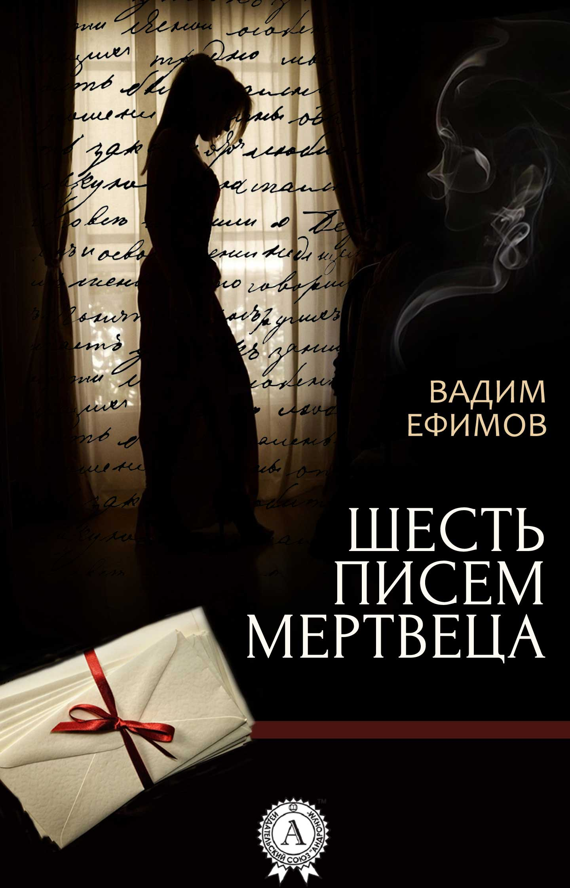
Через кілька днів привозять труну з його тілом. Нотаріус оголошує вдові, що її чоловік залишив незвичайне заповіт. Все спадок перейде їй тільки в тому випадку, якщо протягом 40 днів вона виконає всі вимоги покійного чоловіка. При цьому не можна зраджувати його тіло землі. Крістіна приймає умови, адже мерці не можуть наказувати.
Несподівано починають приходити листи, написані її чоловіком, з незвичайними проханнями. Очевидно, що їх пише той, хто хоче залишити її ні з чим, адже з кожним листом вона втрачає частину спадщини. Христині належить з'ясувати, хто цей недоброзичливець, не втративши при цьому всі стан.
Приємного Вам читання.